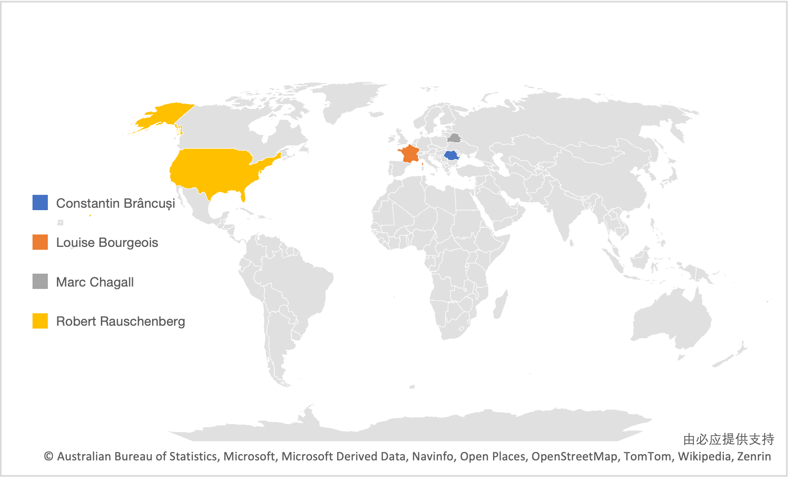

Artists and Nationality
* Move mouse to the artist labels to check their nationalities.
The artist Constantin Brâncuși
came from Romania.
The artist Louise Bourgeois
came from France.
The artist Marc Chagall
came from Belarus.
The artist Robert Rauschenberg
came from United States.